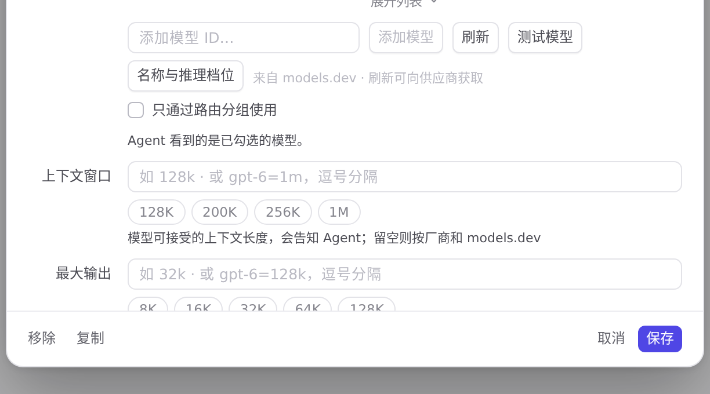

#1059 界面预览
commit b438fb2 · 回到 PR · 自定义供应商的「余额令牌」提示里，除 new-api 的 /api/user/self 外新增了 sub2api 的 /api/v1/user/profile 快捷按钮：点它会写入余额查询地址，并把余额字段填成该地址对应的表达式（$data.balance），提示文案也一并改成同时说明两个接口。
红线是鼠标走过的轨迹，红色圆环是一次点击；底部文字是这一步在做什么。空格暂停，← → 逐段查看。

余额令牌提示里的两个快捷地址 · 展开后的余额查询地址与余额字段
 余额令牌提示里的两个快捷地址 · 展开后的余额查询地址与余额字段
余额令牌提示里的两个快捷地址 · 展开后的余额查询地址与余额字段